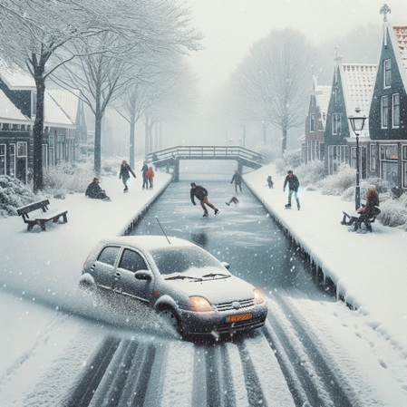

Opgesteld op –
Plaats
GLADHEID – WEERBERICHT
Verwachting per dag
Vandaag, –
- GEEN
Morgen, –
- GEEN
Overmorgen, –
- GEEN
Zesdaagse
In de nacht naar zondag, maar vooral in de nacht naar maandag bestaat er kans op vorst aan de grond. Gladheid wordt door een droog wegdek niet verwacht.
| – | – | – | – | – | – | |
|---|---|---|---|---|---|---|
| Maximumtemperatuur | ||||||
| Minimumtemperatuur | ||||||
| Kans gladheid % | ||||||
| Groen 0-20% | ||||||
| Oranje 20-50 % | ||||||
| Rood 60% of meer | ||||||
| Sneeuw % | 0 | 0 | 0 | 0 | 0 | 0 |
| IJzel % | 0 | 0 | 0 | 0 | 0 | 0 |
Zeer lange termijn t/m –
Er wordt in deze periode geen nachtvorst verwacht.